Overview
Give a high-level overview of what you implemented in this project. Think about what you've built as a whole. Share your thoughts on what interesting things you've learned from completing the project.
In this project, we implemented a spring-mass-damper system to represent the physical simulation of cloth and its interactions with other objects.
We observed the differences between spring and damping constants applied to the system and how it changed the behavior of the cloth independently
as well as its behavior in its collisions with other objects. Finally, we implemented shaders on a cloth as it draped over a sphere using OpenGL
and the Blinn-Phong shading model. We also implemented texture, bump, displacement, and mirror maps as shaders.
Part I: Masses and springs
Take some screenshots of scene/pinned2.json from a viewing angle where you can clearly see the cloth wireframe to show the structure of your point masses and springs.
Show us what the wireframe looks like (1) without any shearing constraints, (2) with only shearing constraints, and (3) with all constraints.
|
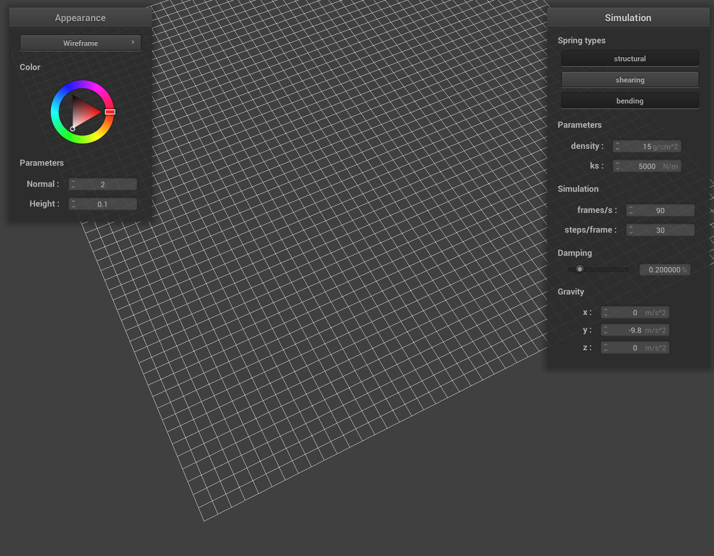
No shearing constraints
|
|
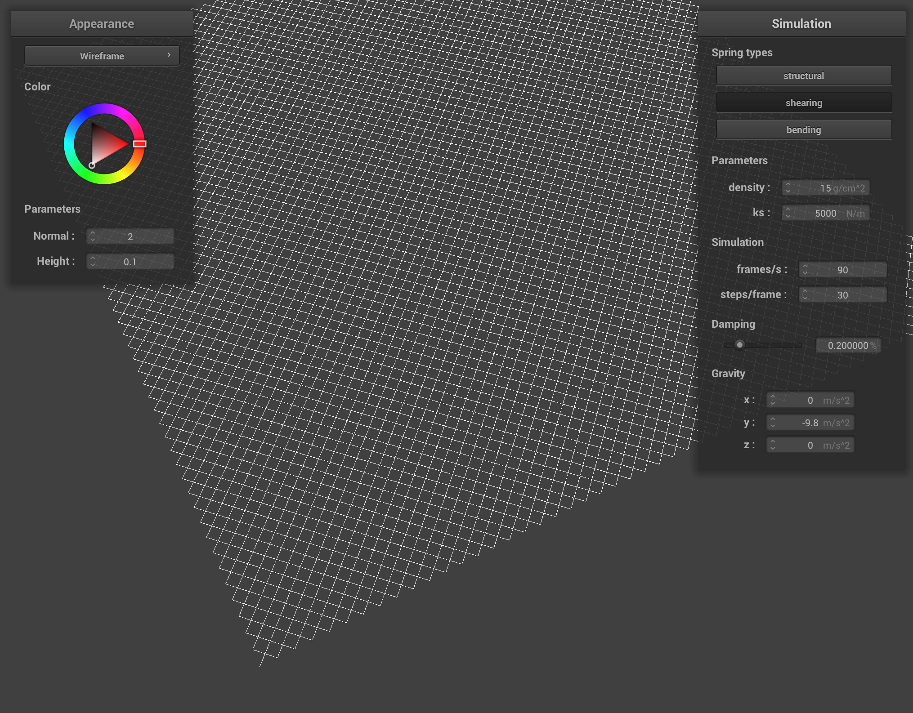
Only shearing constraints
|
|
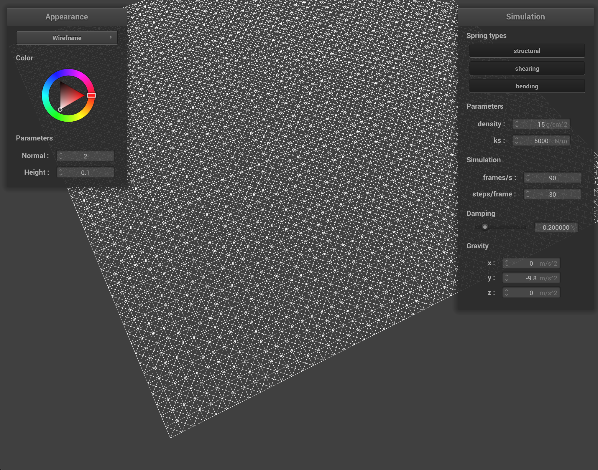
All constraints
|
Part 2: Simulation via numerical integration
Describe the effects of changing the spring constant ks; how does the cloth behave from start to rest with a very low ks? A high ks?
With a very low ks, the springs are held together much more loosely. There is less of a force in between the springs, so they are not held
together as tightly. The effect is opposite for a high ks, where the cloth is much more rigid. It does not fall as much in the middle:
|
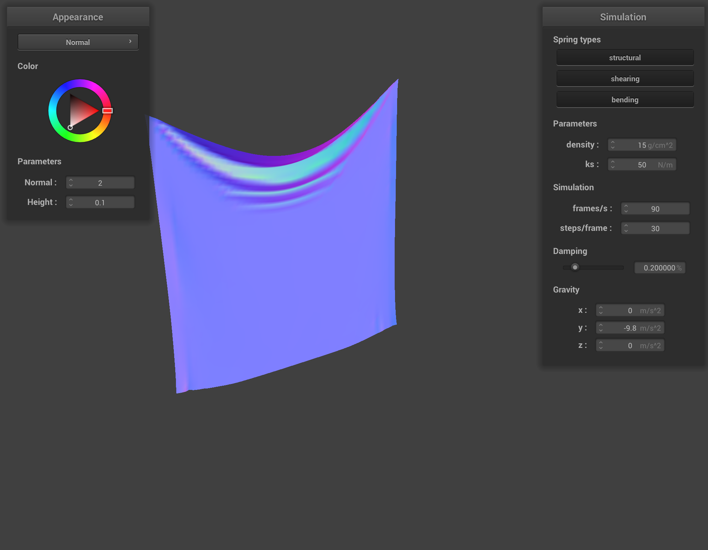
ks = 50
|
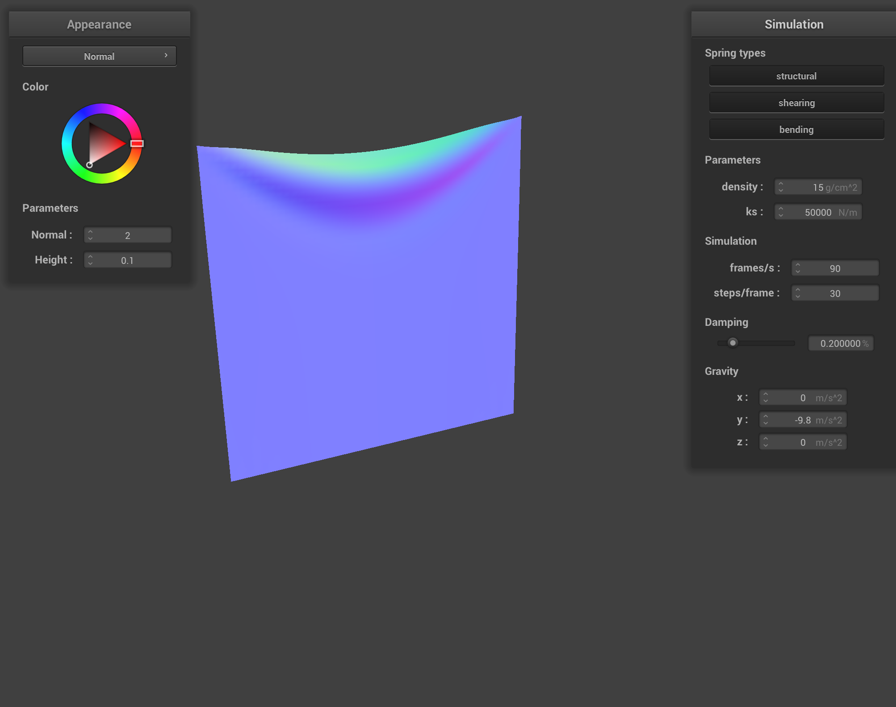
ks = 50000
|
What about for density?
With a very low density, the cloth is not weighed down as much. It has a much smoother appearance when it falls. In contrast, with a high
density, the middle of the cloth sinks much more, as the fabric is heavier and the middle cannot be supported as much by the pinned
points that a lower density cloth would be. This difference in the center is shown below:
|
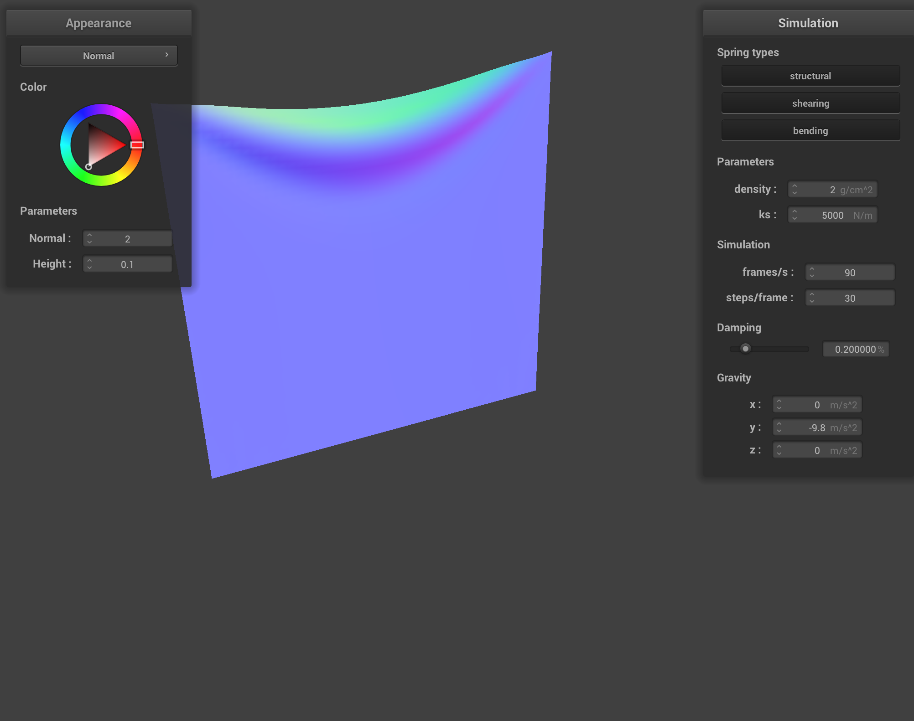
density = 2
|
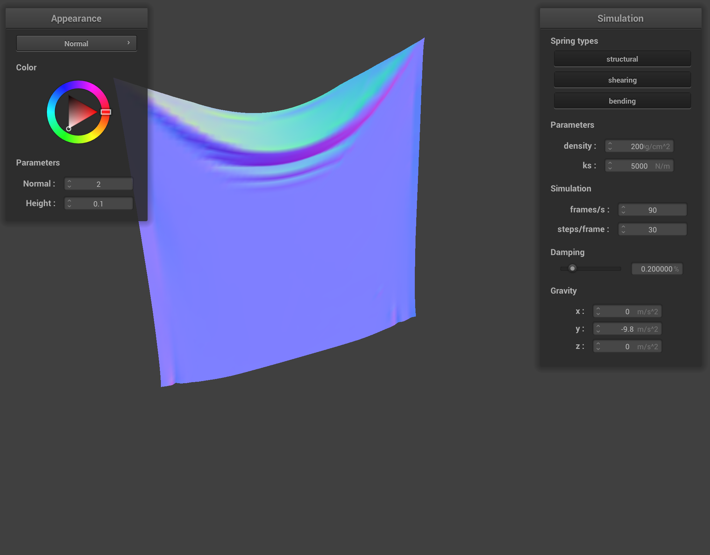
density = 2000
|
What about for damping?
With a very low damping value, the cloth falls much faster and with more force. A consequence of this is we notice the cloth swinging
back and forth from its pinned points. With a higher damping value, the cloth falls with a lot of resistance to gravity and much more
slowly. The cloth comes to a complete stop with out swinging back and forth – it is much more gentle.
|
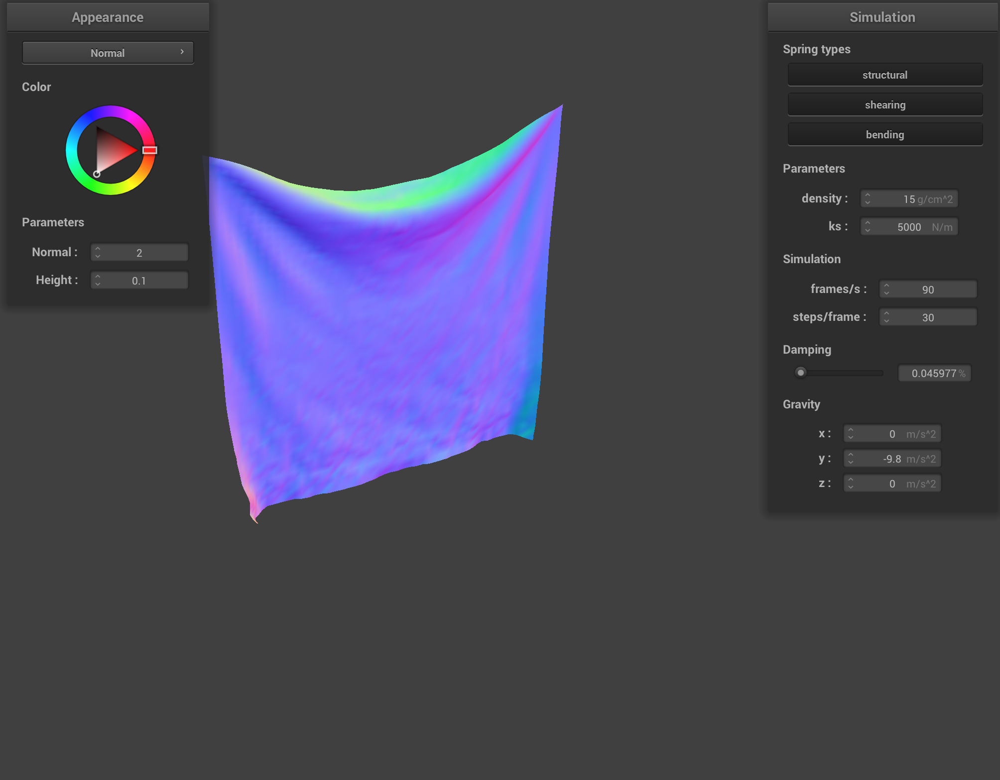
damping = 0.04%
|
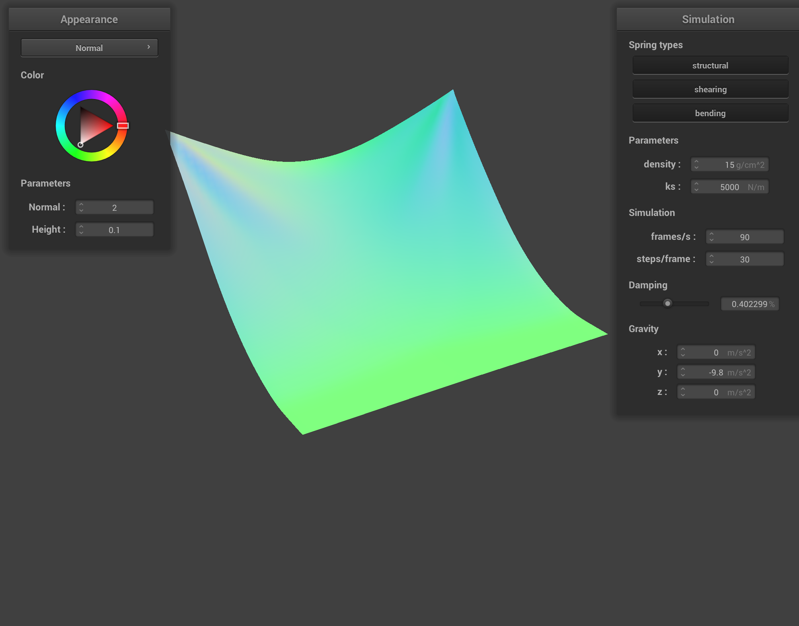
damping = 0.4%
|
Show us a screenshot of your shaded cloth from scene/pinned4.json in its final resting state! If you choose to use different parameters
than the default ones, please list them.
Part 3: Handling collisions with other objects
Show us screenshots of your shaded cloth from scene/sphere.json in its final resting state on the sphere using the
default ks = 5000 as well as with ks = 500 and ks = 50000. Describe the differences in the results.
|
ks = 5000
|
|
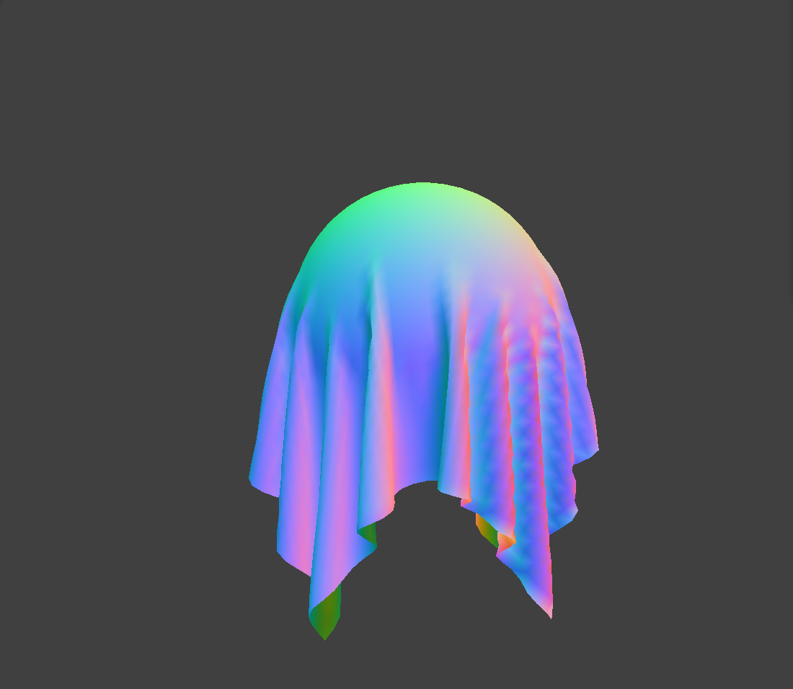
ks = 500
|
|
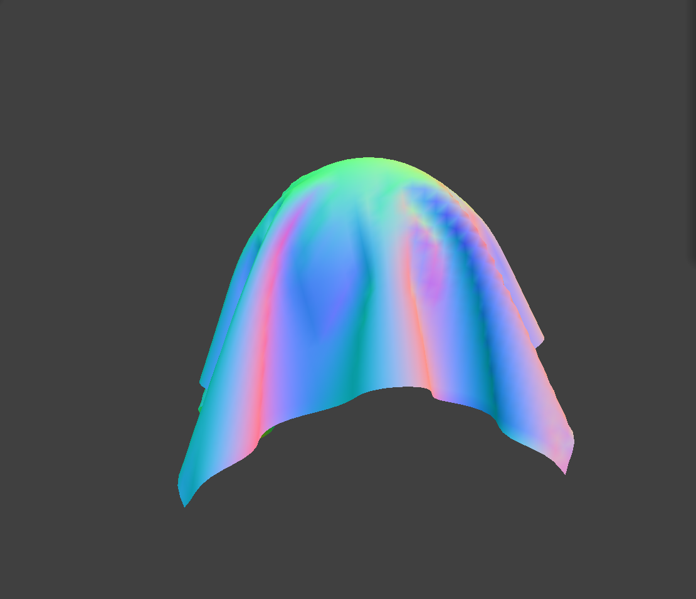
ks = 50000
|
Comparing the default final resting state to one where we lower the ks, a lower ks results in less pull from the rest of the
cloth. As a result, other forces are able to have a greater affect on the cloth – in this case, gravity. The ends of the cloth
get pulled down way more. We see the opposite when incerasing the ks. The cloth is less willing to bend to other objects' shapes
and the effect of gravity, and is much more rigid.
Show us a screenshot of your shaded cloth lying peacefully at rest on the plane. If you haven't by now, feel free to express
your colorful creativity with the cloth! (You will need to complete the shaders portion first to show custom colors.)
Part 4: Handling self-collisions
Show us at least 3 screenshots that document how your cloth falls and folds on itself, starting with an early, initial
self-collision and ending with the cloth at a more restful state (even if it is still slightly bouncy on the ground).
Vary the density as well as ks and describe with words and screenshots how they affect the
behavior of the cloth as it falls on itself.
Having a lower density causes the cloth to expand more and allows for more distance between each point. A higher
density results in a seemingly stiffer cloth with smaller ripples in it as it is falling. Increasing the ks allows the cloth
to be appear more flowy as it falls on itself. It is not as tightly bound. We have the opposite affect when we decrease the ks.
Part 5: Shaders
Explain in your own words what is a shader program and how vertex and fragment shaders work together to create lighting and material effects.
A shader program is a program that computes shading of vertices and fragments of a scene.
They execute parts of the rasterization pipeline on the GPU in parallel, leading to much faster rendering times.
In order to create lighting and material effects, shader programs compute the shading of the vertex of each fragment (most commonly a triangle)
using different constants, equations, and inputs dependent on the material and intensity and distance of lighting.
The vertex shaders then output aspects of this shading, such as their position and normals. The fragment shaders take these vertices
as input and apply transformations to define how the fragments should be shaded per pixel. When taking the vertices as input,
the shader program automatically linearlly interpolate across all vertices of the fragment, resulting in a smooth per pixel shading.
Explain the Blinn-Phong shading model in your own words. Show a screenshot of your Blinn-Phong shader outputting only the ambient component,
a screen shot only outputting the diffuse component, a screen shot only outputting the specular component,
and one using the entire Blinn-Phong model.
As opposed to the Lambertian/Diffusion shading model, the Blinn-Phong shading model is dependent on view direction.
This means that the lighting and shading of an image will change depending on the camera position where the user is viewing the scene.
The Blinn-Phong shading model combines ambient, diffusion, and specular lighting, where specular lighting is the lighting
dependent on the viewing direction. It calculates the bisecting ray between the camera position and light source to determine the
direction of the viewing angle, namely how similar the viewing angle is to the normal vector. The specular lighting will adjust the
light intensity accordingly, as a viewing angle that is more similar to the normal vector has a greater light intensity. The diffuse
component of the Blinn-Phong model is independent of view direction and calculates the shading of the model by the direction of the
light source relative the vertex position and vertex normal, and the ambient lighting does not depend on anything and adds constant
color depending on how its constants are defined.
Show a screenshot of your texture mapping shader using your own custom texture by modifying the textures in /textures/.
Show a screenshot of bump mapping on the cloth and on the sphere. Show a screenshot of displacement mapping on the sphere.
Use the same texture for both renders. You can either provide your own texture or use one of the ones in the textures directory,
BUT choose one that's not the default texture_2.png. Compare the two approaches and resulting renders in your own words.
Compare how your the two shaders react to the sphere by changing the sphere mesh's coarseness by using -o 16 -a 16 and then -o 128 -a 128.
Bump mapping and displacement mapping are both techniques used to relay information of the texture by adjusting the heights of the divots
in the object. Bump mapping does this by changing the lighting of the pixels of the objects, with darker pixels representing divots and
lighter pixels representing peaks (depending on the lighting as well). Displacement also changes the color values of the pixels to represent
height in texture, but it also changes the physical geometry of the object. Comparing bump mapping vs displacement mapping for both the
sphere and the cloth, we can see how bump mapping only changes the color since the sphere remains smooth as it did in our other renders.
With displacement mapping, however, the sphere's geometry changes, as we can see peaks and valleys in the silhouette of the sphere and
the shearing of the texture mapping on the sphere from its geometric change. Comparing the mesh's coarseness with 16x16 vs 128x128 resolution
for the two shaders, the 16x16 resolution results in a render with a smoother sphere face for both shaders, as there is not enough resolution
to capture much of the nuance of the texture mapping applied to the sphere. The displacement mapping differs from the bump mapping in the
16x16 resolution in that the displacement mapping still changes the geometry of the sphere, with edges in its silhouette compared to the
smooth, circular silhouette of the bump mapping. This same difference in geometry and silhouette can be seen between the mapping techniques
in the 128x128 resolution images, but both shaders benefit from the higher resolution, as the face of the sphere captures more of the nuance
of the texture that we applied to it. The face of the sphere has more divots and peaks than the 16x16 rendering, and it is more apparent that
we applied a texture than the 16x16 rendering.
|
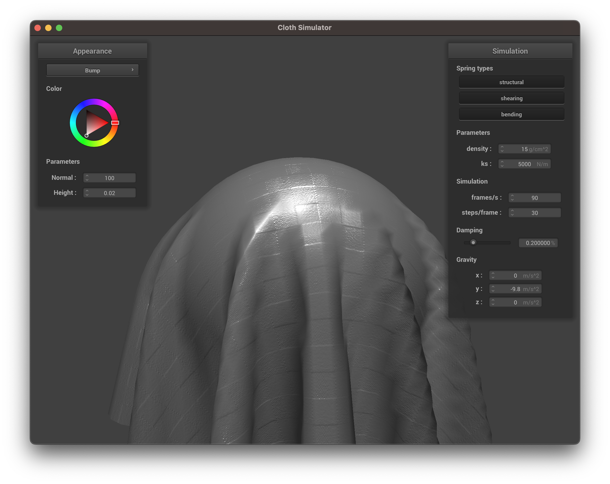
bump cloth
|
|
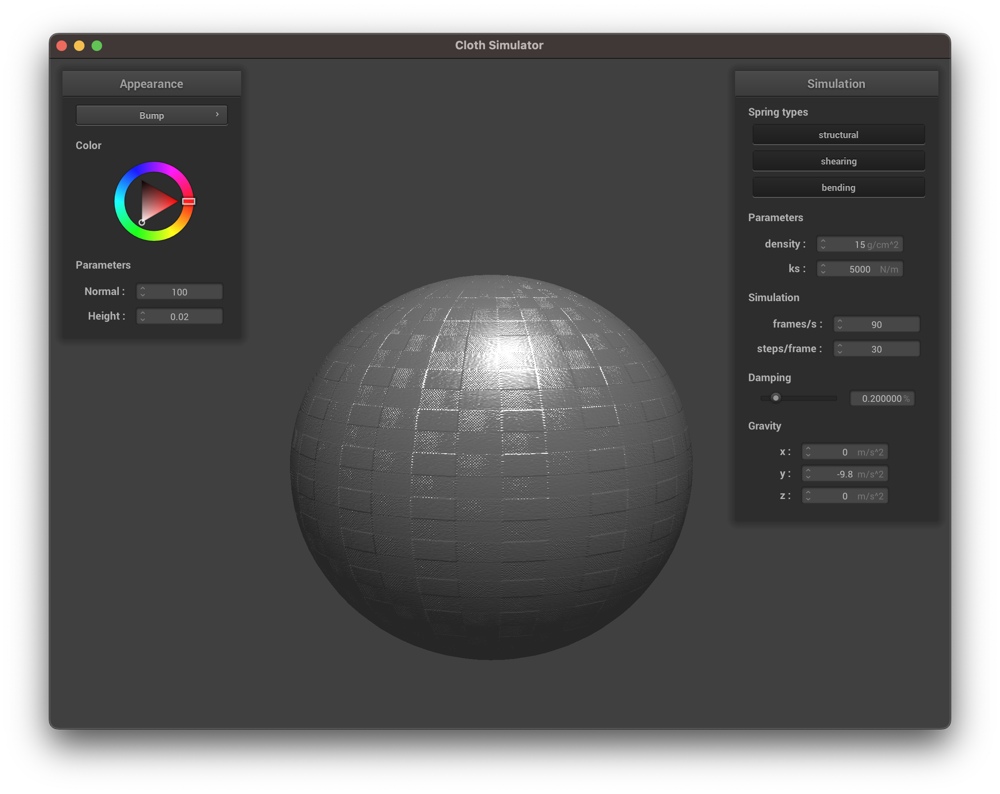
bump sphere
|
|
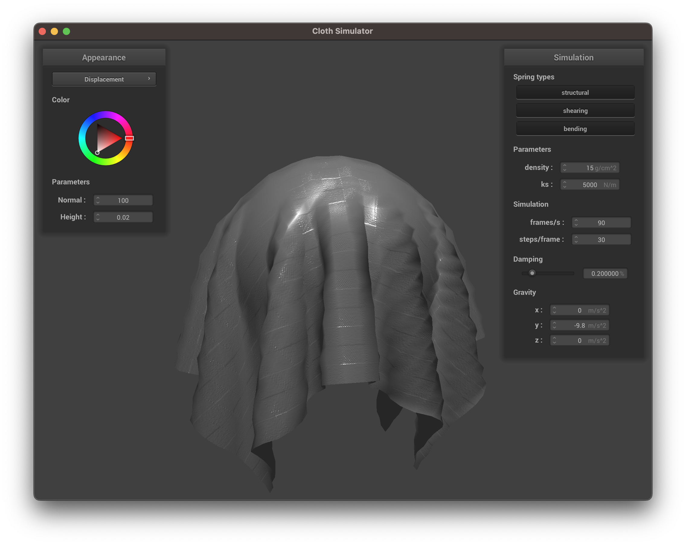
displacement cloth
|
|
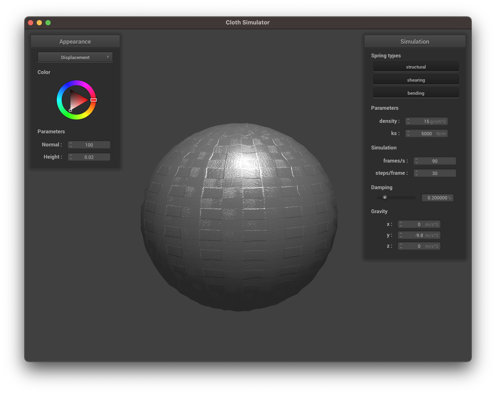
displacement sphere
|
|
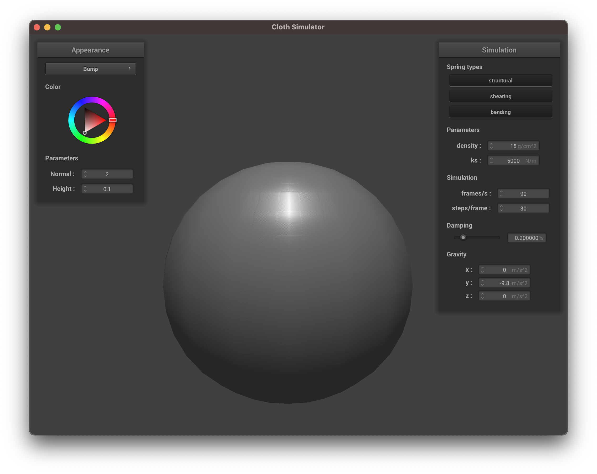
bump sphere 16x16
|
|
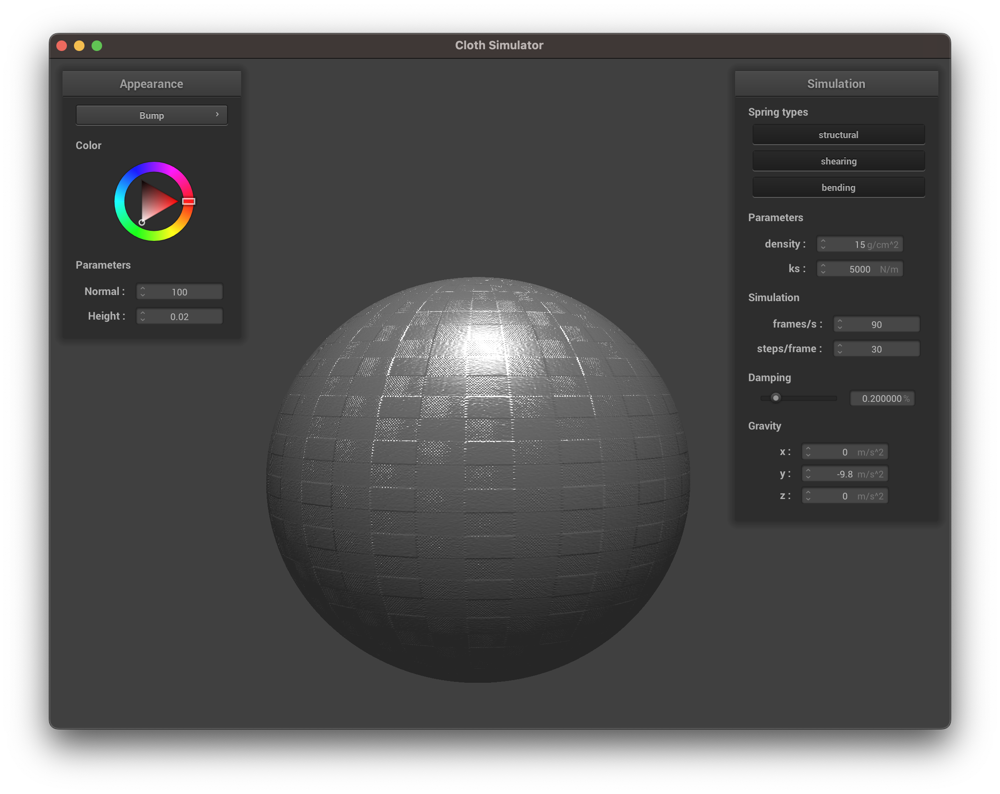
bump sphere 128x128
|
|
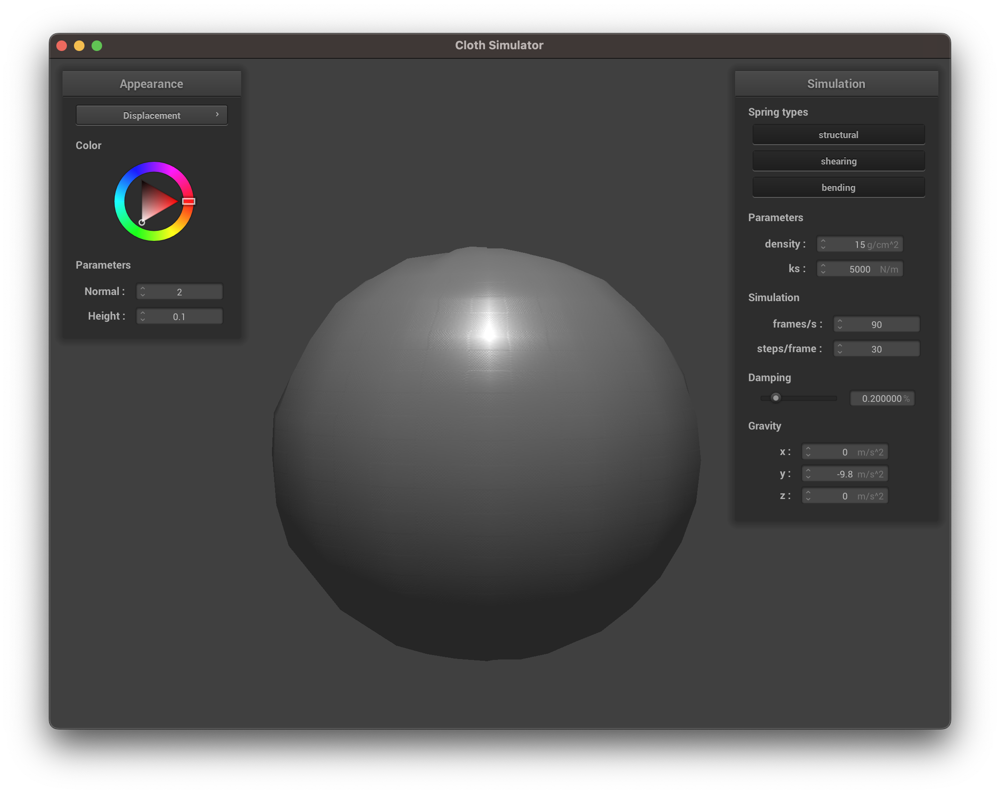
displacement sphere 16x16
|
|
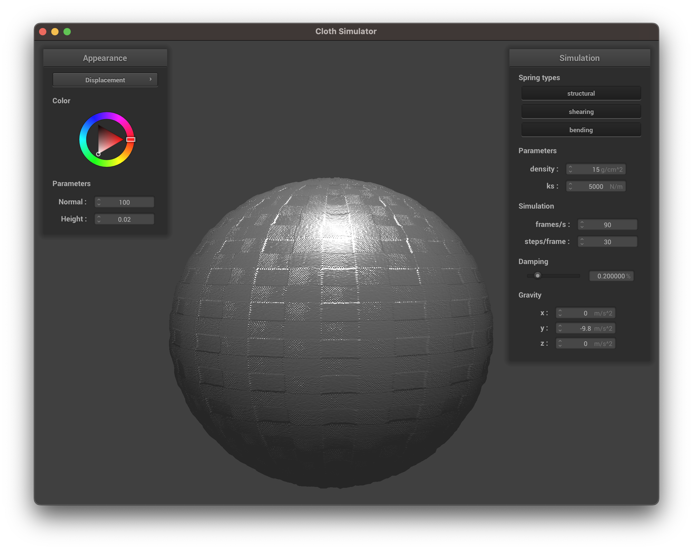
displacement sphere 128x128
|
Show a screenshot of your mirror shader on the cloth and on the sphere.